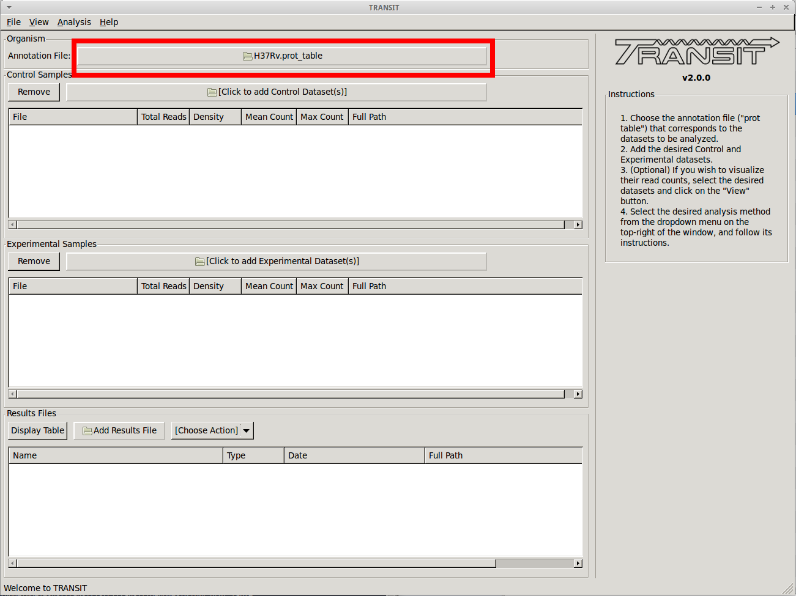
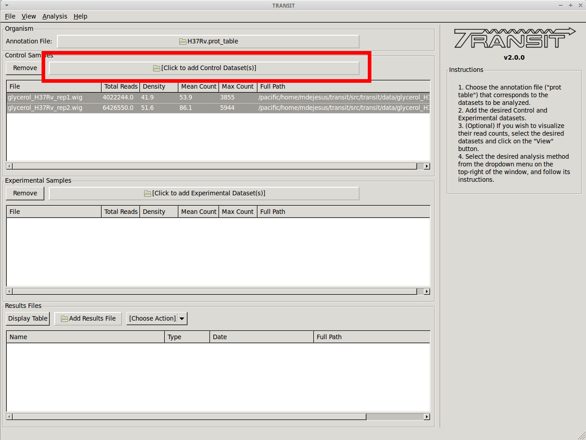
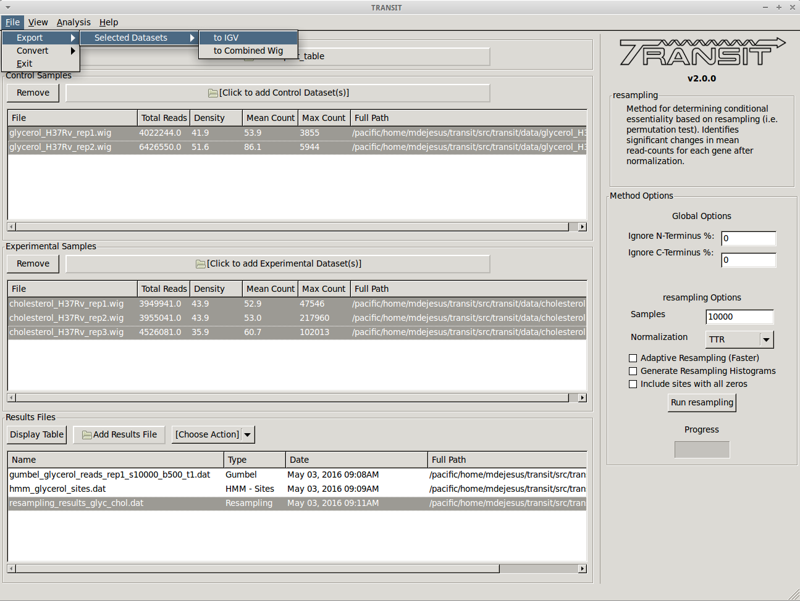

Tutorial: Export datasets
TRANSIT has the capability to export .wig files into different formats. This tutorial shows a quick overview of how to export to the IGV format. This can be useful to be able to import read-count data into IGV from the Broad Institute and use its visualization capabilities.
Adding the annotation file
Before we can export .wig datasets to IGV format, we need to add an annotation file for the organism. Click on the file dialog button, on the top of the TRANSIT window (see image below), and browse and select the appropriate annotation file. Note: Annotation files must be in “.prot_table” or GFF3 format, described above:
{kind=link}
Add .wig datasets
Next we must choose to add .wig formatted datasets what we wish to export to IGV format. To add these, we click on the control sample file dialog (see image below), and select the desired datasets (one by one). In this example, we have two replicates:
{kind=link}
As we add the datasets they will appear in the table below.
Export to IGV
Finally, to export the datasets we click on “Export” in the menu bar at the top of the TRANSIT window, and select the option that matches which datasets we wish to export. Note: Only selected datasets (“Control+Click”) will be exported.
{kind=link}